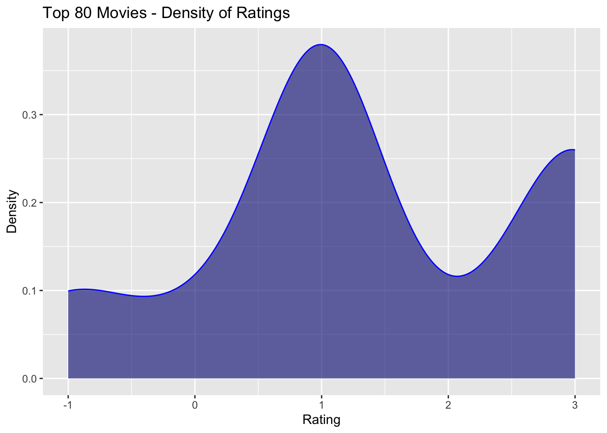

movies <- read.csv("movies.csv")Bechdel Test: An Analysis in R
LING 343 WN23 Project 1
1 Introduction
The Bechdel Test is one of the most popular ways of measuring gender bias in movies. Its main idea comes from a 1985 strip by cartoonist Alison Bechdel. As part of her “Dykes To Watch Out” series, Bechdel wrote that a movie will only pass what she calls “The Rule” if it includes at least two named women who talk to each other about something other than a man. movies.csv is the main dataset used for this analysis and includes general information about movies from 1970 to 2013, as well as whether or not they pass the Bechdel Test. The dataset was extracted from the Tidy Tuesday project.

NOTE: It is important to acknowledge that the Bechdel Test does not yet include a metric for bias against non-binary or gender non-confirming individuals. For the purpose of this analysis, we will be treating “men” and “women” as two binary categories, as they appear in the dataset, although the gender spectrum is a lot more complex that that.
2 Imports
library(dplyr)
library(tidyverse)
library(tibble)
library(gridExtra)3 Data Cleaning
We start the process by cleaning our dataset so that our analysis can flow more easily, without unnecessary variables getting in the way. Some columns such as imdb_id, code, period_code, and decade_code store more organizational variables that won’t necessarily be important when we look at relationships between more relevant variables. Other columns simply contain too much unique data. actors, for instance, includes names of all starring actors in a single cell. We can filter some of these columns out with the subset() function.
movies <- movies |>
subset(select = -c(imdb_id, error, poster, type, awards,
imdb_votes, code, period_code, imdb,
released, response, runtime, decade_code,
actors, writer, director))glimpse(movies)Rows: 1,794
Columns: 18
$ year <int> 2013, 2012, 2013, 2013, 2013, 2013, 2013, 2013, 2013, 20…
$ title <chr> "21 & Over", "Dredd 3D", "12 Years a Slave", "2 Guns…
$ test <chr> "notalk", "ok-disagree", "notalk-disagree", "notalk", "m…
$ clean_test <chr> "notalk", "ok", "notalk", "notalk", "men", "men", "notal…
$ binary <chr> "FAIL", "PASS", "FAIL", "FAIL", "FAIL", "FAIL", "FAIL", …
$ budget <int> 13000000, 45000000, 20000000, 61000000, 40000000, 225000…
$ domgross <chr> "25682380", "13414714", "53107035", "75612460", "9502021…
$ intgross <chr> "42195766", "40868994", "158607035", "132493015", "95020…
$ budget_2013 <int> 13000000, 45658735, 20000000, 61000000, 40000000, 225000…
$ domgross_2013 <chr> "25682380", "13611086", "53107035", "75612460", "9502021…
$ intgross_2013 <chr> "42195766", "41467257", "158607035", "132493015", "95020…
$ plot <chr> NA, NA, "In the antebellum United States, Solomon Northu…
$ rated <chr> NA, NA, "R", "R", "PG-13", "PG-13", "R", "R", "PG-13", "…
$ language <chr> NA, NA, "English", "English, Spanish", "English", "Engli…
$ country <chr> NA, NA, "USA, UK", "USA", "USA", "USA", "USA", "UK", "US…
$ metascore <int> NA, NA, 97, 55, 62, 29, 28, 55, 48, 33, 90, 58, 52, 78, …
$ imdb_rating <dbl> NA, NA, 8.3, 6.8, 7.6, 6.6, 5.4, 7.8, 5.7, 5.0, 7.5, 7.4…
$ genre <chr> NA, NA, "Biography, Drama, History", "Action, Comedy, Cr…Additionally, some columns have many N/A values that might complicate our analysis later. We can get rid of those as well using drop_na().
movies <- movies |>
drop_na()4 Bechdel Ratings
The clean_test variable gives us the reasons why a certain movie failed the Bechdel Test. We use the count() function to extract all possible values.
movies |>
count(clean_test) clean_test n
1 dubious 109
2 men 151
3 notalk 416
4 nowomen 111
5 ok 629Here, nowomen includes movies that have less than two women in them (rating 0), notalk includes movies that have at least two women in them, but they don’t talk to each other (rating 1), and men includes movies that have women that talk to each other, but only about men (rating 2). The tag dubious is given to those movies that caused some skepticism about whether or not they pass the Test, but ultimately received the FAIL label. In contrast, ok denotes movies that met all three conditions and thus passed the Bechdel Test.
We can check the accuracy of those designations by cross-referencing them with the column binary, which reduces the classification to PASS/FAIL according to the Bechdel Test conditions.
movies |>
group_by(clean_test) |>
count(binary)# A tibble: 5 × 3
# Groups: clean_test [5]
clean_test binary n
<chr> <chr> <int>
1 dubious FAIL 109
2 men FAIL 151
3 notalk FAIL 416
4 nowomen FAIL 111
5 ok PASS 629While the labels certainly help us understand the reasons behind each failure, they are not the easiest data to work with. The mutate() function can help us convert the labels into numerical values within [0, 3], according to the Bechdel rule. Since dubious does not fall into a specific category, we will convert it into an additional -1 rating level for the time being. These values are then stored in a new column named rating.
movies["rating"] <- 0
movies <- movies |>
mutate(rating = case_when(
clean_test == 'dubious' ~ -1,
clean_test == 'nowomen' ~ 0,
clean_test == 'notalk' ~ 1,
clean_test == 'men' ~ 2,
clean_test == 'ok' ~ 3)
)glimpse(movies$clean_test) chr [1:1416] "notalk" "notalk" "men" "men" "notalk" "ok" "ok" "notalk" ...glimpse(movies$rating) num [1:1416] 1 1 2 2 1 3 3 1 3 3 ...For an added layer of organization, we can also categorize the ratings as different levels with the as.factor() function.
movies["level"] <- as.factor(movies$rating)
glimpse(movies$level) Factor w/ 5 levels "-1","0","1","2",..: 3 3 4 4 3 5 5 3 5 5 ...5 Analysis & Visualization
Now that we have a clean dataset with only relevant columns, we can analyze general trends of the Bechdel Test as they relate to specific variables. At this point, we can already generate some interesting plots.
5.1 Yearly Trends
The next code chunk creates a bar chart that shows how the overall ratings for the Test changed over the analyzed years. This is one of the many relationships that can be explored using the information in the dataset.
movies |>
group_by(year) |>
ggplot(aes(x = year, fill = level)) +
geom_bar() +
scale_fill_manual(values=c("cornsilk2", "red2", "orange2", "yellow2", "green2")) +
labs(title = "Frequency of Ratings by Year",
x = "Year",
y = "Frequency")5.2 Subsetting
Furthermore, since we will be often looking at the different rating levels, it might be helpful to create separate sub-dataframes for each of them. We will leave the dubious movies out of our analysis, since it is not entirely defined. Similarly, we can create separate dataframes for PASS and FAIL groups of movies.
bechdel_0 <- filter(movies, level == 0)
bechdel_1 <- filter(movies, level == 1)
bechdel_2 <- filter(movies, level == 2)
bechdel_3 <- filter(movies, level == 3)
bechdel_fail <- filter(movies, binary == "FAIL")
bechdel_pass <- filter(movies, binary == "PASS")5.3 International Gross
As an example, we can analyze possible correlations between a movie’s international gross, normalized to 2013, and its result on the Bechdel Test. In order to do so, one option would be to calculate the mean gross for each level of rating. Note that the international gross normalized to 2013 is represented in movies by the variable intgross_2013.
We first create a new dataset to store the ratings, as well as their respective gross mean values. Since the variable is not numeric in the original dataframe, we can convert it using as.integer().
intgross <- data.frame(rating = c(0, 1, 2, 3),
mean = c(mean(as.integer(bechdel_0$intgross_2013), na.rm = TRUE),
mean(as.integer(bechdel_1$intgross_2013), na.rm = TRUE),
mean(as.integer(bechdel_2$intgross_2013), na.rm = TRUE),
mean(as.integer(bechdel_3$intgross_2013), na.rm = TRUE)))We can plot these values with ggplot(). The graph below reveals that movies with at least two named women in them who do not talk to each other, receiving a rating of 1, had the highest mean international gross value, followed by those that had no women characters, meaning they failed the Bechdel Test.
intgross |>
ggplot(aes(x = rating, y = mean)) +
geom_line(color = "orchid", size = 1.5) +
labs(title = "Total Mean International Gross by Rating",
x = "Rating",
y = "Mean International Gross")
Another way we can explore the relationship between the two variables is to look at the frequency of ratings for highest-grossing movies. A subset of size n = 80 was chosen arbitrarily for this step. First, we use order() to sort the data in a descending order based on the intgross_2013 variable.
movies <- movies[order(as.integer(movies$intgross_2013),
decreasing = TRUE), ]Then, we extract the first 80 columns, or the 80 highest-grossing movies, with the help of the head() function. We can generate a density plot of each Bechdel rating using ggplot()’s geom_density(). Here, we observe that most of the highest-grossing movies in the dataset had a rating of 1 (women who don’t talk to each other), followed by 3 (passed the Test).
movies |>
head(80) |>
ggplot(aes(x = as.integer(rating))) +
geom_density(fill = "navyblue", color = "blue", alpha = 0.6) +
labs(title = "Top 80 Movies - Density of Ratings",
x = "Rating",
y = "Density")
5.4 Movie Genres
A further example of a relationship that can be analyzed is that between the genre of a movie and its PASS/FAIL Bechdel designation. When trying to extract the values for genre, we run into a problem. Some movies fall into multiple genre categories and have therefore more than a single one listed in their genre column. There are multiple ways to approach this situation. The easiest option would be to only look at the first value. However, the genres are listed in alphabetical order, with no actual levels of “importance.” Thus, ignoring the rest would not be representative of all genres.
In this case, str_split_i() can come in handy. The function allows us to split a string into multiple pieces. The names in the genre column are separated by a simple comma (,), which serves as our pattern parameter. We can split the genre string into 3 values, since 3 is the maximum number of genres listed, and instead add them to separate columns genre_1, genre_2, and genre_3.
movies['genre_1'] <- 'NA'
movies['genre_2'] <- 'NA'
movies['genre_3'] <- 'NA'
for(i in 1:nrow(movies)) {
movies[i, 'genre_1'] <- str_split_i(movies[i, "genre"], ", ", 1)
movies[i, 'genre_2'] <- str_split_i(movies[i, "genre"], ", ", 2)
movies[i, 'genre_3'] <- str_split_i(movies[i, "genre"], ", ", 3)
}glimpse(movies$genre_1) chr [1:1416] "Horror" "Adventure" "Adventure" "Action" "Animation" "Crime" ...glimpse(movies$genre_2) chr [1:1416] NA "Horror" "Sci-Fi" "Adventure" "Adventure" "Drama" ...glimpse(movies$genre_3) chr [1:1416] NA "Thriller" NA "Sci-Fi" "Drama" NA "Fantasy" "Fantasy" NA ...At this point, we have listed all genres separately, in different columns. Still, it would be more helpful for the purpose of our analysis to put all of those names in a single column, i.e. make the dataframe “longer”. We can easily achieve this with pivot_longer().
movies <- movies |>
pivot_longer(cols = c('genre_1', 'genre_2', 'genre_3'),
names_to = 'genre_labels',
values_to = 'genres')glimpse(movies$genres) chr [1:4248] "Horror" NA NA "Adventure" "Horror" "Thriller" "Adventure" ...Notice here that some rows still contain N/A values, since not all movies have three different genres. Again, we can ignore those values. Likewise, we won’t be needing our genre_labels column, so we can filter that out as well.
movies <- movies |>
drop_na() |>
subset(select = -c(genre_labels))We then create a new dataframe to store the different genres and their respective PASS and FAIL frequencies.
all_genres <- movies |>
group_by(genres) |>
count(binary)glimpse(all_genres)Rows: 42
Columns: 3
Groups: genres [21]
$ genres <chr> "Action", "Action", "Adventure", "Adventure", "Animation", "Ani…
$ binary <chr> "FAIL", "PASS", "FAIL", "PASS", "FAIL", "PASS", "FAIL", "PASS",…
$ n <int> 280, 114, 222, 102, 68, 30, 42, 33, 243, 247, 162, 70, 3, 1, 33…Now that we have isolated our relevant values, we are ready to plot them. In order to make our graph more legible, we use filter() to show only some of the most common movie genres: action, adventure, comedy, crime, romance, sci-fi, and thriller. We can see, for example, that the only genres in which PASS is more frequent than FAIL are comedy and romance. The other selected genres are represented in its majority by more movies that fail the Bechdel Test, with the disparity being noticeably larger in genres like action and adventure.
all_genres |>
filter(genres %in% c("Action", "Adventure",
"Comedy", "Crime", "Romance",
"Sci-Fi", "Thriller")) |>
ggplot(aes(fill = binary, x = genres, y = n)) +
geom_bar(position = "dodge", stat = "identity", width = 0.7) +
scale_fill_manual(values=c("red2", "green2")) +
labs(title = "PASS/FAIL Trends by Movie Genre",
x = "Genre",
y = "Frequency")5.5 Joining Datasets
As we have seen before with the existence of a dubious label, the Bechdel Test is not always a consensus between viewers. That is because they might have different notions of what it means for a movie to have a woman with a significant enough role to be factored into the Test, or there might be nuances to a conversation between women that viewers may or may not classify as “about a a man.” In order to explore this variation even further, we will import raw_bechdel.csv, a different dataset (sourced via the Bechdel Test API) that includes information about movies from 1970 to 2020.
raw_bechdel <- read.csv("raw_bechdel.csv")For the sake of simplicity, let’s assume that rows where the title and year variables are the same in both datasets refer to the same movie. We can join the dataframes by title with left_join(), then select the row duplicates that have the same year.
joined <- movies |>
left_join(raw_bechdel, by = "title") |>
filter(year.x == year.y) |>
rename("year" = `year.x`)Using the sum() function, we observe that the ratings given to overlapping movies in both datasets are the same in 3184 occasions. In contrast, they are not the same in 455 occasions, 444 of them being cases where the rating in raw_bechdel is greater than that in movies.
sum(joined$rating.x == joined$rating.y)[1] 3184sum(joined$rating.x != joined$rating.y)[1] 455sum(joined$rating.x < joined$rating.y)[1] 444sum(joined$rating.x > joined$rating.y)[1] 116 Keywords (with NLP)
6.1 udpipe
This next section utilizes the udpipe package, an open-source tool for Natural Language Processing, including tokenization, raw text parsing, and tagging. A complete documentation can be found here. We are interested in investigating whether some keywords are more frequent than others in movies that pass or fail the Bechdel Test.
library(udpipe)udmodel <- udpipe_download_model(language = "english")
udmodel <- udpipe_load_model(file = udmodel$file_model)
plots <- udpipe_annotate(udmodel, movies$plot)
plots <- data.frame(plots)glimpse(plots)Rows: 109,045
Columns: 14
$ doc_id <chr> "doc1", "doc1", "doc1", "doc1", "doc1", "doc1", "doc1", …
$ paragraph_id <int> 1, 1, 1, 1, 1, 1, 1, 1, 1, 1, 1, 1, 1, 1, 1, 1, 1, 1, 1,…
$ sentence_id <int> 1, 1, 1, 1, 1, 1, 1, 1, 1, 1, 1, 1, 1, 1, 1, 1, 1, 1, 1,…
$ sentence <chr> "When a teenage girl is possessed by a mysterious entity…
$ token_id <chr> "1", "2", "3", "4", "5", "6", "7", "8", "9", "10", "11",…
$ token <chr> "When", "a", "teenage", "girl", "is", "possessed", "by",…
$ lemma <chr> "when", "a", "teenage", "girl", "be", "possess", "by", "…
$ upos <chr> "ADV", "DET", "NOUN", "NOUN", "AUX", "VERB", "ADP", "DET…
$ xpos <chr> "WRB", "DT", "NN", "NN", "VBZ", "VBN", "IN", "DT", "JJ",…
$ feats <chr> "PronType=Int", "Definite=Ind|PronType=Art", "Number=Sin…
$ head_token_id <chr> "6", "4", "4", "6", "6", "14", "10", "10", "10", "6", "1…
$ dep_rel <chr> "mark", "det", "compound", "nsubj:pass", "aux:pass", "ad…
$ deps <chr> NA, NA, NA, NA, NA, NA, NA, NA, NA, NA, NA, NA, NA, NA, …
$ misc <chr> NA, NA, NA, NA, NA, NA, NA, NA, NA, "SpaceAfter=No", NA,…6.2 Morphological Features
Here, some variables might be of interest when dealing with the linguistic aspect of plot descriptions. For example, the upos tag represents the universal part-of-speech label of a single word, or the abstract lexical category associated with it, such as ADJ, NOUN, or VERB. We can use the txt_freq() function to compute the most occurring categories in plot descriptions for the entire dataset.
upos_freq <- txt_freq(plots$upos)
upos_freq$key <- as.factor(upos_freq$key)glimpse(upos_freq)Rows: 17
Columns: 3
$ key <fct> NOUN, DET, VERB, ADP, PUNCT, ADJ, PROPN, PRON, PART, ADV, AUX…
$ freq <int> 25017, 12161, 12042, 11948, 10165, 8308, 7453, 7126, 3225, 30…
$ freq_pct <dbl> 22.94190472, 11.15227658, 11.04314732, 10.95694438, 9.3218396…Another important tag is lemma, which contains the canonical (base) form of the word, or the form typically found in dictionaries. This helps us to “normalize” words with similar semantic contents into a single form. Once we understand what these tags represent, we can then them to explore certain trends in the occurrence of specific word types. For instance, we can compute and plot the most frequent nouns in plot descriptions of movies that failed or passed the Bechdel Test, represented by our bechdel_fail and bechdel_pass dataframes, respectively.
plots_fail <- udpipe_annotate(udmodel, bechdel_fail$plot)
plots_fail <- data.frame(plots_fail)nouns_fail <- subset(plots_fail, upos %in% c("NOUN"))
nouns_fail <- txt_freq(nouns_fail$lemma)
nouns_fail$key <- as.factor(nouns_fail$key)glimpse(nouns_fail)Rows: 1,975
Columns: 3
$ key <fct> man, life, world, year, story, friend, woman, group, family, …
$ freq <int> 97, 82, 51, 49, 48, 44, 41, 36, 35, 35, 33, 33, 32, 30, 30, 2…
$ freq_pct <dbl> 1.7962963, 1.5185185, 0.9444444, 0.9074074, 0.8888889, 0.8148…plots_pass <- udpipe_annotate(udmodel, bechdel_pass$plot)
plots_pass <- data.frame(plots_pass)nouns_pass <- subset(plots_pass, upos %in% c("NOUN"))
nouns_pass <- txt_freq(nouns_pass$lemma)
nouns_pass$key <- as.factor(nouns_pass$key)glimpse(nouns_pass)Rows: 1,639
Columns: 3
$ key <fct> life, woman, girl, family, man, school, year, friend, world, …
$ freq <int> 89, 86, 64, 56, 49, 46, 46, 46, 42, 34, 32, 31, 28, 28, 27, 2…
$ freq_pct <dbl> 2.0422212, 1.9733823, 1.4685636, 1.2849931, 1.1243690, 1.0555…We plot the noun frequencies for each case with ggplot(). The function grid.arrange() from the gridExtra package can be used to arrange them side by side.
ggp1 <- nouns_fail |>
head(20) |>
ggplot(aes(x = reorder(key, freq), y = freq)) +
geom_bar(stat = "identity", fill = "turquoise3", width = 0.7) +
coord_flip() +
labs(title = "FAIL - Nouns",
x = "Noun",
y = "Frequency")ggp2 <- nouns_pass |>
head(20) |>
ggplot(aes(x = reorder(key, freq), y = freq)) +
geom_bar(stat = "identity", fill = "orange2", width = 0.7) +
coord_flip() +
labs(title = "PASS - Nouns",
x = "Noun",
y = "Frequency")grid.arrange(ggp1, ggp2, ncol = 2)6.3 Keyword Extraction
While these two plots already reveal some interesting patters in the groups of nouns that appear most frequently in PASS and FAIL movies, a noun without surrounding context might not be enough to draw any concrete conclusions. This is where RAKE comes in. RAKE (Rapid Automatic Keyword Extraction) is an efficient unsupervised Machine Learning algorithm for keyword extraction. It is rooted in the notion that keywords often contain multiple words and very few words with minimum lexical meaning, such as standard punctuation or stop words. The algorithm recognizes word frequencies and relative degrees, using that information to ultimately identify content words, as well as key phrases.
The next code chunk executes a sample keyword extraction with keywords_rake() for the entire movies dataset and plots the 30 most frequent keywords in a flipped bar chart.
keywords <- keywords_rake(x = plots, term = "lemma", group = "doc_id",
relevant = plots$upos %in% c("NOUN", "ADJ"))
keywords$key <- as.factor(keywords$keyword)keywords |>
head(30) |>
ggplot(aes(x = reorder(key, rake), y = rake)) +
geom_bar(stat = "identity", fill = "mediumpurple", width = 0.7) +
coord_flip() +
labs(title = "Most Frequent Keywords",
x = "Keyword",
y = "Frequency")The function as_phrasemachine() coverts upos labels to one-letter tags (i.e. A for adjectives), which can then be combined into POS sequences. This allows noun phrases, for example, to be identified by the regex (A|N)*N(P+D*(A|N)*N)*.
plots["phrase_tag"] <- as_phrasemachine(plots$upos, type = "upos")We then can plot the most frequent noun phrases out of the movies plot keywords.
noun_phrases <- keywords_phrases(x = plots$phrase_tag, term = tolower(plots$token),
pattern = "(A|N)*N(P+D*(A|N)*N)*",
is_regex = TRUE, detailed = FALSE)
noun_phrases <- subset(noun_phrases, ngram > 1 & freq > 3)
noun_phrases$key <- as.factor(noun_phrases$keyword)noun_phrases |>
head(20) |>
ggplot(aes(x = reorder(key, freq), y = freq)) +
geom_bar(stat = "identity", fill = "seagreen", width = 0.7) +
coord_flip() +
labs(title = "Most Frequent NP Keywords",
x = "NP Keyword",
y = "Frequency")Similarly to what was done before for nouns, we can plot two different graphs for PASS and FAIL side-by-side, this time with the most frequent noun phrases.
plots_fail["phrase_tag"] <- as_phrasemachine(plots_fail$upos, type = "upos")noun_phrases_fail <- keywords_phrases(x = plots_fail$phrase_tag, term = tolower(plots_fail$token),
pattern = "(A|N)*N(P+D*(A|N)*N)*",
is_regex = TRUE, detailed = FALSE)
noun_phrases_fail <- subset(noun_phrases_fail, ngram > 1 & freq > 3)
noun_phrases_fail$key <- as.factor(noun_phrases_fail$keyword)ggp1 <- noun_phrases_fail |>
head(30) |>
ggplot(aes(x = reorder(key, freq), y = freq)) +
geom_bar(stat = "identity", fill = "turquoise", width = 0.7) +
coord_flip() +
labs(title = "FAIL - NP Keywords",
x = "NP Keyword",
y = "Frequency")plots_pass["phrase_tag"] <- as_phrasemachine(plots_pass$upos, type = "upos")noun_phrases_pass <- keywords_phrases(x = plots_pass$phrase_tag, term = tolower(plots_pass$token),
pattern = "(A|N)*N(P+D*(A|N)*N)*",
is_regex = TRUE, detailed = FALSE)
noun_phrases_pass <- subset(noun_phrases_pass, ngram > 1 & freq > 3)
noun_phrases_pass$key <- as.factor(noun_phrases_pass$keyword)ggp2 <- noun_phrases_pass |>
head(30) |>
ggplot(aes(x = reorder(key, freq), y = freq)) +
geom_bar(stat = "identity", fill = "orange2", width = 0.7) +
coord_flip() +
labs(title = "PASS - NP Keywords",
x = "NP Keyword",
y = "Frequency")grid.arrange(ggp1, ggp2, ncol = 2)7 Conclusion
Overall, there are numerous different ways in which the movies dataset can be further explored, but the generated plots uncover some interesting correlations. For instance, plot descriptions of movies that fail the Bechdel Test often include key phrases that start with the possessive pronoun “his,” along with phrases like “world war”, “serial killer,” “fbi agent,” and “alien race,” which relate to themes commonly associated with men and masculinity. In contrast, the most frequent keyword for movies that pass the Bechdel Test is “young woman” (after “new york”), followed by terms such as “high school,” “small town,” and “best friend.” These findings are also consistent with those from the the “PASS/FAIL Trends by Movie Genre” graph shown earlier.